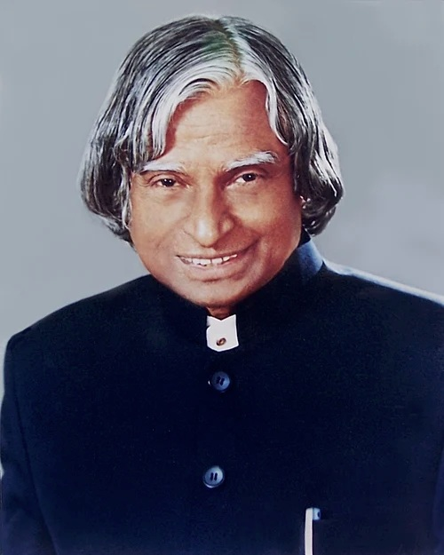

The Missile Man who taught a nation to dream.

Born in 1931 in Rameswaram, Tamil Nadu, Avul Pakir Jainulabdeen Abdul Kalam grew up in a modest family. As a boy he sold newspapers to help at home, yet his curiosity about birds and flight set him on a path toward aeronautics.
After studying physics and aerospace engineering, he joined India's defence research and space organisations. He led work on satellite launch vehicles and later guided the nation's missile programme, earning the affectionate title "Missile Man of India".
In 2002 he became India's 11th President. Nicknamed the "People's President", he made time for students everywhere, believing young minds were the country's greatest resource.
Even after leaving office he kept teaching and writing. He passed away in 2015 while lecturing to students, doing what he loved most. His humility and vision still inspire millions.
"Dream, dream, dream. Dreams transform into thoughts and thoughts result in action."— Dr. A.P.J. Abdul Kalam